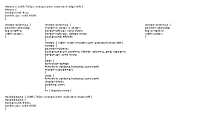
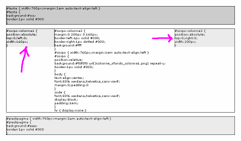
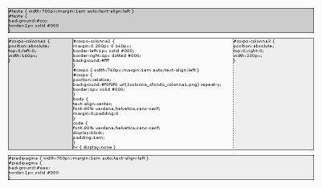

Layout a tre colonne per tutti i gusti
In questo articolo vedremo come realizzare un layout a tre colonne sfruttando il posizionamento assoluto invece della proprietà float. Attraverso tre diversi CSS, col medesimo codice XHTML, otterremo tre diversi tipi di layout: a larghezza prefissata, liquido con colonne laterali di larghezza prefissata, completamente liquido.
Il codice XHTML
Come detto utilizzeremo lo stesso codice XHTML per ottenere le tre versioni. Ciò non deve sorprendere poiché i CSS sono stati creati per separare i contenuti dal modo in cui questi sono presentati. Il codice utilizzato per il body è il seguente:
<body>
<!-- testa -->
<div id="testa"><h1>NomeSito</h1></div>
<!-- /testa -->
<hr />
<!-- corpo -->
<div id="corpo">
<div id="corpo-colonna1">[...]</div>
<hr />
<div id="corpo-colonna2">[...]</div>
<hr />
<div id="corpo-colonna3">[...]</div>
</div>
<!-- /corpo -->
<hr />
<!-- pie' di pagina -->
<div id="piedipagina"><p>pié di pagina</p></div>
<!-- pie' di pagina -->
</body>
La pagina è così strutturata:
- un'intestazione, identificata dal selettore
id="testa" -
un corpo, identificato dal selettore
id="corpo", suddiviso in tre colonne:- colonna 1: id="corpo-colonna1"
- colonna 2: id="corpo-colonna2"
- colonna 3: id="corpo-colonna3"
- un piè di pagina, identificato dal selettore
id="piedipagina"
La struttura, come evidenziato dal codice, è stata ottenuta attraverso dei tag DIV, identificati attraverso l'attributo ID. Fra le varie sezioni sono stati inseriti degli HR, il cui scopo è quello di evidenziare la separazione dei contenuti anche quando il browser non è in grado di leggere o interpretare il foglio di stile.
Il codice CSS
Come detto i tre diversi layout saranno applicati attraverso tre diversi fogli di stile. In tutti e tre i casi, in luogo della proprietà float, come nel precedente articolo sul layout a tre colonne, si è fatto uso del posizionamento assoluto.
Il principio su cui si costruiscono i tre layout è basato su quanto segue. Innanzitutto si posiziona in maniera relativa il corpo (id="corpo") affinché ogni posizionamento assoluto, di elementi al suo interno, si riferisca al corpo stesso e non a tutta la pagina. In seguito si creano le colonne laterali, impostandone la larghezza e posizionandole in maniera assoluta. A questo punto, le colonne laterali si troveranno sovrapposte alla colonna centrale. Per evitare tale sovrapposizione sarà sufficiente impostare i margini laterali della colonna centrale.
Questa tecnica offre vantaggi rispetto al classico uso della proprietà float (trascurando i soliti vantaggi rispetto l'uso delle tabelle), ma presenta anche uno svantaggio, nulla di grave per fortuna. I vantaggi più evidenti sono la possibilità di disporre le colonne nell'ordine preferito. Ad esempio è possibile scrivere nel codice XHTML prima i contenuti della colonna centrale e poi quelli della colonna laterale, ovvero è possibile spostare tutte e due le colonne sulla destra o tutte e due sulla sinistra della colonna centrale. Nella struttura della pagina, infatti, si è generalizzato parlando di colonna 1, colonna 2, colonna 3, senza specificare quale fosse la colonna di sinistra o di centro o di destra. Un secondo vantaggio consiste nella maggiore robustezza del metodo ai capricci dei browser, che potrebbero "spingere"la colonna di destra sotto quella di sinistra. Lo svantaggio consiste nel fatto che la colonna centrale deve essere sempre più alta di quelle laterali. Questo vincolo in genere può essere facilmente rispettato, poiché la colonna centrale è quella che presenta i maggiori contenuti. Qualora il vincolo non possa essere soddisfatto, è sufficiente aggiungere del padding inferiore (padding-bottom) alla colonna centrale. Il vincolo è dovuto al fatto che le colonne laterali sono posizionate in maniera assoluta, dunque non sono più in grado di influire sulla disposizione degli altri box della pagina. Il piè di pagina si trova posto sotto il corpo, la cui altezza è determinata da quella della colonna centrale (priva di posizionamento assoluto) e del tutto indifferente all'altezza delle colonne laterali, poiché posizionate in maniera assoluta. Se il vincolo non fosse rispettato, le colonne laterali si sovrapporrebbero al footer.
Detto questo, è possibile illustrare i tre CSS utilizzati per la realizzazione dei differenti layout.
Il layout a larghezza prefissata
Vedremo ora come realizzare il codice per il layout a larghezza prefissata.
Eliminiamo i margini e il padding predefiniti dal browser per il tag BODY, eliminiamo anche gli horizontal-rule, inutili nel layout che realizzeremo.
body { margin:0; padding:0 }
hr { display:none }
Impostiamo la larghezza assoluta, pari a 760 pixel, per #testa, #corpo e #piedipagina. Tutte e tre le sezioni saranno poste al centro della pagina.
body { text-align:center }
#testa {
width:760px;
margin:1em auto;
text-align:left
}
#corpo {
width:760px;
margin:1em auto;
text-align:left
}
#piedipagina {
width:760px;
margin:1em auto;
text-align:left
}
Per posizionare le colonne laterali in maniera assoluta, prendendo come riferimento la sezione #corpo, quest'ultima deve essere posizionata in maniera relativa.
#corpo {
position:relative;
}
Adesso è possibile posizionare le colonne laterali. La prima colonna sarà posta a sinistra e larga 160 pixel:
#corpo-colonna1 {
position:absolute;
top:0; left:0;
width:160px;
}
Il posizionamento assoluto (position:aboslute) consente di porre il nel punto desiderato indipendentemente dagli altri elementi della pagina. Le proprietà top:0; left:0, se associate alla proprietà position:absolute, stabiliscono che il box sia posto esattamente in alto a destra rispetto al box della sezione #corpo, essendo questa posizionata in maniera relativa.
La terza colonna sarà posta in alto a sinistra e sarà larga 200 pixel:
#corpo-colonna3 {
position:absolute;
top:0; right:0;
width:200px;
}
Il codice è praticamente lo stesso di quello usato per regolare la posizione della prima colonna. L'unica differenza (altre al valore della proprietà width) consiste nell'uso della prorietà right:0 in luogo di left:0.
A questo punto le colonne laterali, essendo disposte indipendentemente dagli altri elementi della pagina, saranno sovrapposte alla colonna centrale, poiché questa si sviluppa per tutta la larghezza del corpo. Per evitare questa sovrapposizione è sufficiente impostare i margini della seconda colonna in modo tale da avere a destra e a sinistra lo spazio necessario per contenere comodamente le due colonne:
#corpo-colonna2 {
margin:0 200px 0 160px;
}
Il margine sinistro è largo 160px, proprio come la prima colonna, mentre il margine destro è largo 200px come la terza colonna.
Si ottiene così una struttura come quella rappresentata dalla seguente immagine.
Nell'immagine si vede la struttura con l'intestazione, le tre colonne e il piè di pagina. Per completare il layout, ormai è sufficiente definire i bordi e i colori di sfondo delle varie sezioni.
Gli unici problemi, in questa fase, si presentano con le colonne. Queste non si sviluppano in altezza come la colonna centrale, dunque se i bordi e i colori di sfondo fossero definiti nelle regole per i selettori #colonna-1 e #colonna-3 si avrebbe l'effetto mostrato nella seguente figura:
Si nota che le colonne s'interrompono subito dopo i contenuti.
Il problema è di facile soluzione. Per quanto riguarda i bordi è sufficiente impostarli non nelle colonne laterali ma in quella centrale:
#corpo-colonna2 {
border-left:1px solid #000;
border-right:1px dotted #000;
}
Per quanto riguarda il colore dello sfondo delle colonne, la soluzione è molto semplice. Invece di agire direttamente sullo sfondo delle colonne, si agisce sullo sfondo del corpo e della colonna centrale, lasciando lo sfondo delle colonne trasparente:
#corpo {
background:#f0f0f0;
}
#corpo-colonna2 {
background:#fff
}
In questo modo le colonne laterali, essendo trasparenti, appariranno come se avessero uno sfondo grigio chiaro (#f0f0f0), mentre la colonna centrale avrà uno sfondo bianco. Qualora si volesse che le due colonne non siano dello stesso colore, potremmo sfruttare un'immagine (GIF o PNG) monocromatica (un grigio leggermente più scuro, ad esempio #e0e0e0), larga come la colonna di sinistra (160 pixel) e alta un solo pixel. Impostando quest'immagine come sfondo che si ripete solo verticalmente per il corpo, avremo due colonne di differente colore. Il codice sopra riportato va così modificato:
#corpo {
background:#f0f0f0 url(sfondo_colonna1.png) repeat-y;
}
#corpo-colonna2 {
background:#fff
}
Il risultato del codice finora prodotto è illustrato nell'immagine seguente:
Ormai manca solo l'impostazione del padding, per allontanare i contenuti dai bordi. Ricordando che il padding destro e quello sinistro vanno a sommarsi alla larghezza del box, non possiamo impostare tali proprietà direttamente nelle regole per le tre colonne, il padding superiore e quello inferiore possono invece essere regolati comodamente:
#corpo-colonna1 {
padding:1em 0;
}
#corpo-colonna2 {
padding:1em 0;
}
#corpo-colonna3 {
padding:1em 0;
}
Come fare dunque ad allontanare i contenuti delle colonne dai bordi? La risposta è semplice se consideriamo che le colonne sono solo dei contenitori per i contenuti. Questi contenuti saranno dei testi racchiusi da paragrafi (tag P), ovvero saranno a loro volta racchiusi in altri contenitori, come ad esempio liste, box e così via. Nella pagina d'esempio, i contenuti sono porzioni del codice CSS adottato, racchiusi nel tag CODE. L'allontanamento dai bordi è stato ottenuto impostando i margini di tal elemento:
code {
font:80% verdana,helvetica,sans-serif;
display:block;
margin:0 1em .5em 1em;
}
Il risultato finale, di cui è disponibile un esempio, è una pagina con intestazione, piè di pagina e un corpo a tre colonne, tutto con larghezza fissata in modo assoluto.
Il layout liquido con colonne laterali di larghezza prefissata
L'unica differenza col layout precedentemente illustrato è nella larghezza dell'intestazione, del corpo e del piè di pagina. In questo caso infatti gli elementi della pagina si allargano per occupare sempre la stessa porzione dello spazio disponibile. Per maggiore chiarezza si veda l'esempio.
Volendo, ad esempio, che il layout occupi il 90% dello spazio disponibile, sarà sufficiente modificare il codice precedentemente illustrato come di seguito riportato:
#testa { width:90%; }
#corpo { width:90%; }
#piedipagina { width:90%; }
Il resto del codice può restare tranquillamente invariato.
Il layout completamente liquido
L'ultimo layout che sarà considerato in questo articolo è quello totalmente liquido. Rispetto al layout liquido con colonne laterali di larghezza prefissata, in questo caso le colonne avranno anch'esse una larghezza espressa in percentuale.
Si voglia ad esempio che la prima colonna sia larga il 20% del corpo e la terza colonna sia larga il 25%. Per maggiore chiarezza si veda l'esempio. La larghezza delle colonne laterali e i margini della colonna centrale andranno adattati di conseguenza.
Rispetto alla versione liquida con colonne laterali di larghezza prefissata, il codice CSS va dìmodificato come segue:
#corpo-colonna1 { width:20% }
#corpo-colonna3 { width:25% }
#corpo-colonna2 { margin:0 25% 0 20% }
Con queste modifiche però, non è nota a priori la larghezza delle colonne. Non è più consigliabile l'utilizzo di una immagine di sfondo per impostare il colore di una delle due colonne. Il codice CSS riguardante lo sfondo del corpo sarà modificato come segue:
#corpo { background:#f0f0f0; }
Compatibilità
I template sono stati testati con successo con IE5.5 e IE6, Mozilla 1 (Netscape Navigator 6), Opera 6, Opera 7 (BETA), Konqueror 3.0.4. L'unico problema si è verificato con Opera 6, il quale non interpreta correttamente il margine fra testa, corpo e piè di pagina.
File correlati
Articoli correlati:
Strumenti


.ConStile è disponibile anche in XML.
Some Rights Reserved. This work is licensed under a Creative Commons License.